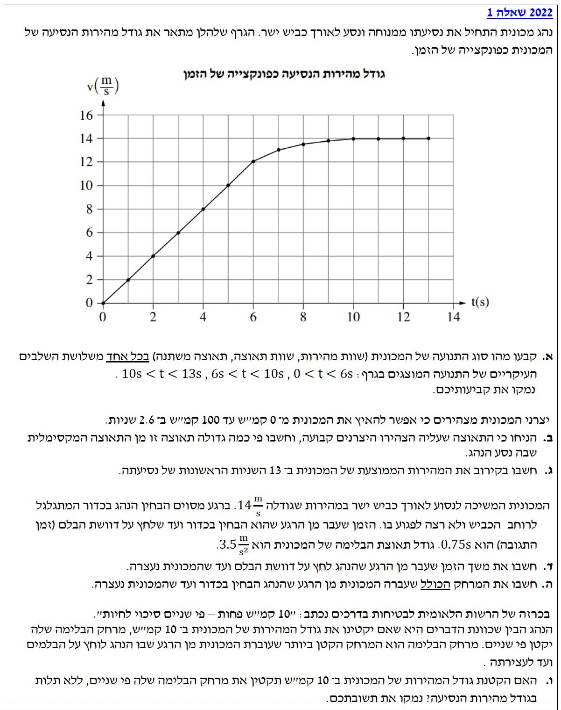

פתרון בגרות מכניקה 2022
שאלה 1: קינמטיקה ודינמיקה של רכב
עודכן:
--- --:--:--

תמונת השאלה לא נטענה. אנא ודאו שקובץ question-image.png נמצא בתיקייה.
מה נתון:
גרף מהירות-זמן \( v(t) \). עלינו לנתח שלושה מקטעי זמן.
מה מחפשים:
סוג התנועה (שוות מהירות / שוות תאוצה / תאוצה משתנה) בכל שלב ונימוק.
פתרון צעד-אחר-צעד:
1. בזמן \( 0 < t < 6s \): הגרף הוא קו ישר בעל שיפוע קבוע שאינו אפס. שיפוע הגרף מייצג את התאוצה, ולכן התנועה היא תנועה שוות תאוצה (המהירות גדלה בקצב קבוע).
2. בזמן \( 6s < t < 10s \): הגרף הוא קו קמור המשתנה בצורה שאינה ליניארית. שיפוע המשיק לגרף הולך וקטן עם הזמן, לכן מדובר בתנועה בעלת תאוצה משתנה (גודל התאוצה הולך וקטן).
3. בזמן \( 10s < t < 13s \): הגרף הוא קו ישר אופקי (שיפוע אפס). המהירות קבועה בערך של \( 14 \frac{m}{s} \), לכן מדובר בתנועה שוות מהירות (תאוצה אפס).
0-6s: שוות תאוצה | 6-10s: תאוצה משתנה | 10-13s: שוות מהירות
זכרו: בגרף מהירות-זמן, השיפוע הוא התאוצה. אם הגרף ישר - התאוצה קבועה. אם הגרף עקום - התאוצה משתנה. אם הגרף אופקי - התאוצה היא אפס והמהירות קבועה.
מה נתון:
- נתוני יצרן: מהירות סופית \( v = 100 \frac{km}{h} \).
- זמן הגעה למהירות זו: \( t = 2.6s \).
- נניח תאוצה קבועה.
שלב 0 - המרת יחידות:
\( v = 100 \frac{km}{h} = \frac{100}{3.6} \frac{m}{s} \approx 27.78 \frac{m}{s} \)
מה מחפשים:
פי כמה גדולה תאוצת היצרן (\( a_{manufacturer} \)) מהתאוצה המקסימלית בגרף (\( a_{max} \)).
נוסחאות מהדף:
\( v = v_0 + at \)
\( a = \frac{\Delta v}{\Delta t} \)
הצבה ופתרון:
1. חישוב תאוצת היצרן:
\[ a_{manuf} = \frac{v - v_0}{t} = \frac{27.78 - 0}{2.6} \approx 10.68 \frac{m}{s^2} \]
2. מציאת התאוצה המקסימלית מהגרף (שיפוע מקסימלי, מתרחש בין 0 ל-6 שניות):
\[ a_{max} = \frac{\Delta v}{\Delta t} = \frac{12 - 0}{6 - 0} = 2 \frac{m}{s^2} \]
3. חישוב היחס בין התאוצות:
\[ \text{Ratio} = \frac{a_{manuf}}{a_{max}} = \frac{10.68}{2} = 5.34 \]
תאוצת היצרן גדולה פי 5.34 מהתאוצה המקסימלית בגרף.
שימו לב! תמיד המירו יחידות של קמ"ש למטר לשנייה על ידי חילוק ב-3.6 לפני שאתם מציבים בנוסחאות הקינמטיקה.
מה נתון:
הגרף לכל אורך 13 השניות.
מה מחפשים:
מהירות ממוצעת ב-13 השניות הראשונות.
נוסחאות מהדף:
\( \bar{v} = \frac{\Delta x}{\Delta t} \)
הצבה ופתרון:
ההעתק (\( \Delta x \)) הוא השטח מתחת לגרף \( v(t) \). נחלק את השטח לטרפז (או משולש ומלבנים) ונספור משבצות או נחשב שטחים מקורבים:
- שטח 1 (0 עד 6 שניות - משולש): \( \frac{6 \cdot 12}{2} = 36m \)
- שטח 2 (6 עד 10 שניות - קירוב טרפז): \( \frac{(12 + 14) \cdot 4}{2} = 52m \)
- שטח 3 (10 עד 13 שניות - מלבן): \( 3 \cdot 14 = 42m \)
\[ \Delta x_{total} \approx 36 + 52 + 42 = 130m \]
\[ \bar{v} = \frac{130}{13} = 10 \frac{m}{s} \]
המהירות הממוצעת היא בקירוב \( 10 \frac{m}{s} \).
מה נתון:
- מהירות התחלתית: \( v_0 = 14 \frac{m}{s} \).
- זמן תגובה: \( t_{reaction} = 0.75s \).
- תאוצת בלימה: \( a = -3.5 \frac{m}{s^2} \) (כיוון הפוך למהירות).
- מהירות סופית: \( v = 0 \).
הערת מורה: בחרנו את כיוון התנועה כחיובי. לכן, מכיוון שגודל המהירות קטן, התאוצה פועלת נגד כיוון התנועה והיא שלילית במשוואות.
מה מחפשים:
ד: זמן בלימה (מרגע הלחיצה). ה: מרחק עצירה כולל (מרגע ההבחנה).
נוסחאות מהדף:
\( v = v_0 + at \)
\( \Delta x = v_0 t + \frac{1}{2}at^2 \)
הצבה ופתרון:
סעיף ד'
\[ 0 = 14 + (-3.5) \cdot t_{braking} \]
\[ 3.5 \cdot t_{braking} = 14 \implies t_{braking} = \frac{14}{3.5} = 4s \]
סעיף ה'
המרחק הכולל מורכב ממרחק התגובה (תנועה שוות מהירות) ומרחק הבלימה (תנועה שוות תאוצה):
\[ \Delta x_{react} = v_0 \cdot t_{react} = 14 \cdot 0.75 = 10.5m \]
\[ \Delta x_{brake} = v_0 t_{brake} + \frac{1}{2} a t_{brake}^2 = 14 \cdot 4 + \frac{1}{2} (-3.5) \cdot 4^2 = 56 - 28 = 28m \]
\[ \Delta x_{total} = 10.5 + 28 = 38.5m \]
זמן הבלימה: 4 שניות | מרחק עצירה כולל: 38.5 מטר.
מה נתון:
טענה: הקטנת המהירות ב-10 קמ"ש תקטין את מרחק הבלימה פי 2.
מה מחפשים:
האם הטענה נכונה והאם הקטנה זו תלויה במהירות הנסיעה?
נוסחאות מהדף:
\( v^2 = v_0^2 + 2a\Delta x \)
הצבה ופתרון:
עבור בלימה עד עצירה (\( v=0 \)):
\[ 0 = v_0^2 + 2a\Delta x_{brake} \implies \Delta x_{brake} = \frac{v_0^2}{-2a} \]
אנחנו רואים שמרחק הבלימה תלוי בריבוע המהירות (\( v_0^2 \)). הקטנת המהירות בערך קבוע (10 קמ"ש) תשפיע בצורה שונה בהתאם למהירות ההתחלתית. לדוגמה:
- אם המהירות יורדת מ-20 ל-10, המרחק קטן פי 4 (\( 2^2 \)).
- אם המהירות יורדת מ-50 ל-40, המרחק קטן פי \( (5/4)^2 = 1.56 \).
היחס אינו קבוע ותלוי במהירות הנסיעה ההתחלתית.
הטענה אינה נכונה תמיד, והקטנת המרחק תלויה מאוד במהירות הנסיעה ההתחלתית.